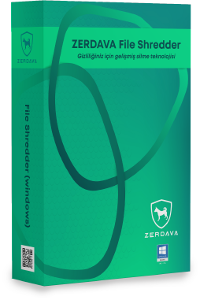
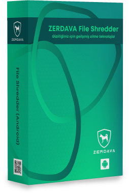
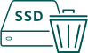

Mobil Cihazlar, Bilgisayarlar, Harici
Sürücüler,
Sunucular ve Daha Fazlası için Güvenli Silme
Girişim
Kamu ve özel sektör kuruluşları,
veri güvenlik açıklarına karşı korunmalı,
çok sayıda veri koruma yönetmeliğine uymalı,
kaynakları verimli kullanmalı ve çevre dostu uygulamalarını
bünyelerine dahil etmelidir. ZERDAVA, bu gereksinimlerin
hepsini karşılar. Sistem karmaşıklığını azaltmanıza, yönetimi
basitleştirmenize ve veri saklama politikalarınızın uygulanmasını
kolaylaştırmanıza olanak tanıyarak BT ekibiniz ve son
kullanıcılarınız arasında daha yüksek veri güvenliği, denetim
uyumluluğu ve artan üretkenlik sağlar. ZERDAVA, yüksek
teknolojili ürünleri ile bireysel ve kurumsal kullanıcılar için
güvenli veri silme, saklama ve transfer konularında uzmanlaşmış
veri güvenliği içerir.
Gizliliğiniz için gelişmiş silme
teknolojisi
Bir dosyayı veya fotoğrafı sildiğinizde,
işletim sistemi o
verilere yapılan referansı kaldırır ancak belleğinizdeki
gerçek bilgileri ortadan kaldırmaz. Sadece boş alan
olarak işaretler, böylece başka bir dosya gelip bu blokları
kullanabilir.
ZERDAVA boş alan silme özelliğiyle,
kullanılmayan disk
alanını güvenli bir şekilde silebilirsiniz, böylece silinen veriler kurtarılamaz.
Bir dosyayı veya fotoğrafı sildiğinizde,
işletim sistemi o
verilere yapılan referansı kaldırır ancak belleğinizdeki
gerçek bilgileri ortadan kaldırmaz. Sadece boş alan
olarak işaretler, böylece başka bir dosya gelip bu blokları
kullanabilir.


DOSYALARI, KLASÖRLERI VE SABIT SÜRÜCÜLERI GÜVENLI BIR
ŞEKILDE SILMEK IÇIN
TASARLANDI.
Kullanım Durumuna Göre Gözat
HARİCİ ÇIKARILABİLİR MEDYA AYGITI
Çıkarılabilir aygıtlarındaki (USB bellek, SD Kart
vb.) verileri güvenle silin.
ULUSLAR ARASI STANDARTLARDA
SILME METOTLARI
Virüsler, casus yazılımlara ve diğer zararlı
yazılımlara karşı bilgisayarınızı korur.

BOŞ DISK ALANI SILME
Kullanılmayan disk alanını güvenli bir
şekilde silin.
SILME IŞLEMINDEN SONRA HASSAS BILGILERIN KORUNMASI VE AYRINTILI
SILME RAPORLARI
OTOMATIK GÜNCELLEME
ŞIFRE ILE KORUMA
Android Cihazınızı Güvenle Silin.
Mobil cihazlarda sözde silinmiş dosyaları hafızadan geri
yüklemek bu günlerde çok kolay. Mobil cihazınızı satmadan veya başkasına vermeden önce, cihazdaki tüm kişisel
dosyaların geri alınamayacak şekilde silindiğinden emin
olmalısınız. Uluslararası standartlardaki güvenli veri kurtarma yazılımımız ile mobil cihazınızdaki verileri tamamen
silebilirsiniz.